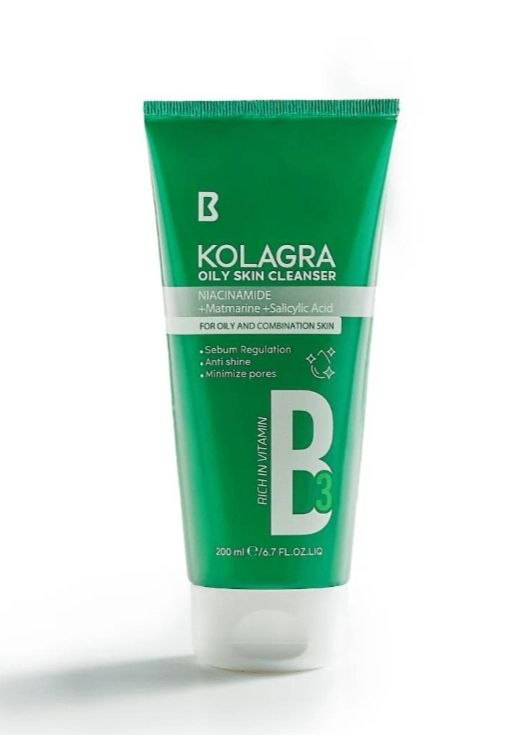
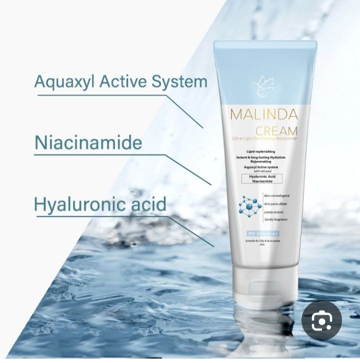
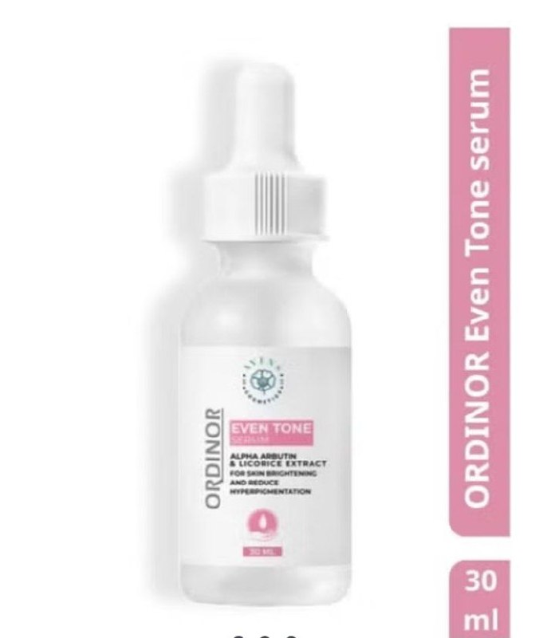
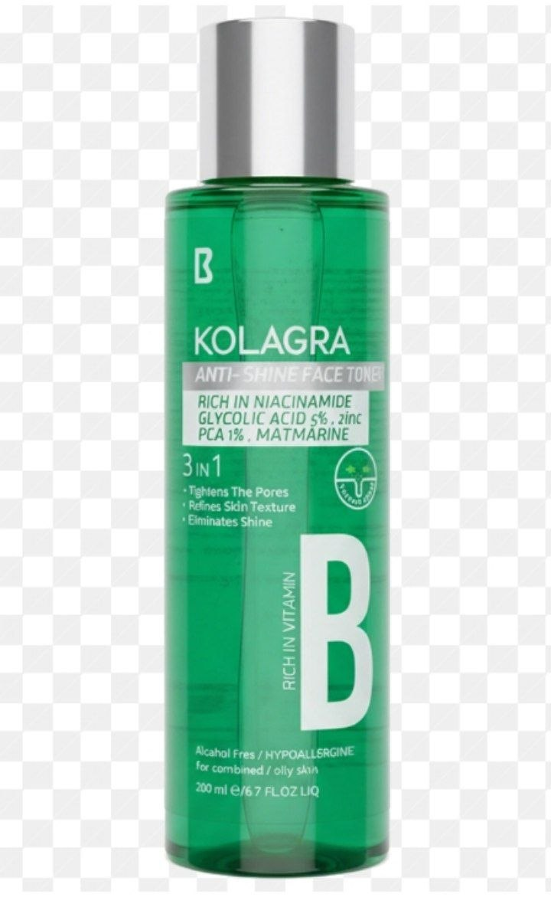
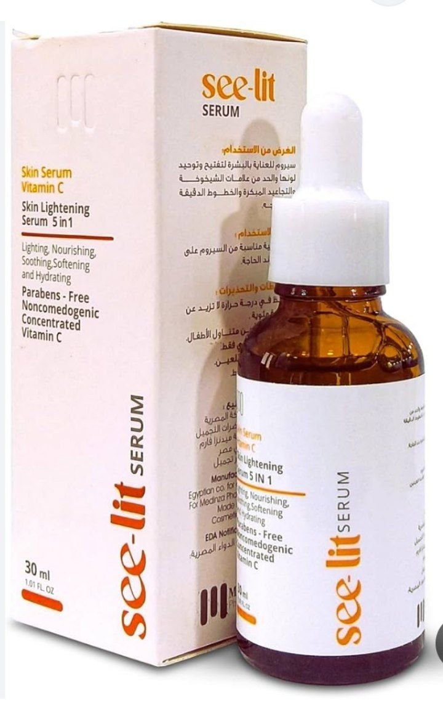
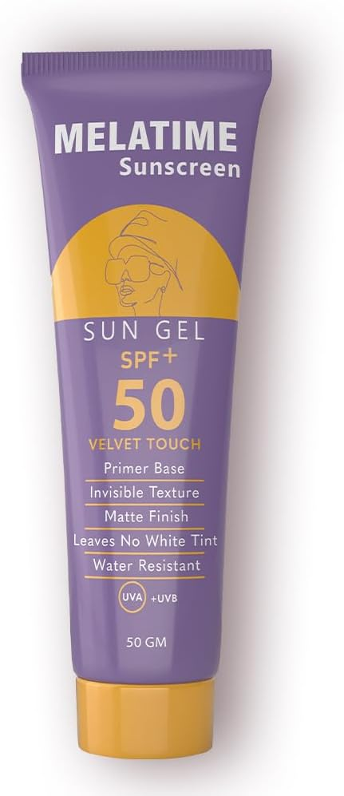

Contains Salicylic Acid: Penetrates deep into pores to dissolve excess oils and prevent the formation of blackheads and pimples. Contains Tea Tree Oil: A natural antibacterial and anti-inflammatory agent that helps soothe the skin and treat active breakouts. Contains Aloe Vera Extract: Hydrates the skin and prevents dryness during deep cleansing, leaving your skin soft and supple.

Contains Niacinamide: Works to even out skin tone, fade acne marks, and minimize the appearance of enlarged pores. Contains Panthenol: Deeply hydrates the skin, soothes redness or irritation, and helps repair a damaged skin barrier. Contains Ceramide Extract: Locks moisture inside the skin and prevents dryness, giving your complexion a healthy, smooth feel.

Contains Alpha Arbutin: The strongest and safest ingredient for brightening skin spots, treating pigmentation, and fading post-acne marks (both brown and red). Contains Licorice Extract: A natural skin brightener that helps deliver instant radiance and even out dull skin tone. Contains Hyaluronic Acid: Ensures high hydration while the skin is brightening, keeping it soft and glowing all day.

Contains Alpha Hydroxy Acid (AHA): Gently exfoliates the skin’s surface, helping remove small blemishes and renew skin cells. Contains Witch Hazel: A natural ingredient that tightens enlarged pores and significantly reduces excess oil secretion. Contains Vitamin B3: Soothes redness and evens out skin tone after cleansing.

Contains Stable Vitamin C: A powerful antioxidant that protects your skin from sun damage and pollution, while instantly reviving dullness. Usage Tip: Apply before sunscreen to boost its effectiveness and provide extra protection against oxidation.

Melatim.. Maximum Protection & Silky Finish Contains SPF 50+ Filters: Provide complete protection against harmful sun rays (UVA/UVB), preventing pigmentation, freckles, and acne marks. Primer Base Technology: Smooths skin texture and temporarily minimizes enlarged pores, making it the perfect base before makeup or for a clear, shine-free look. Contains Vitamin E & Antioxidants: Deeply nourish the skin and protect it from oxidation, keeping your complexion fresh and radiant all day under the sun.